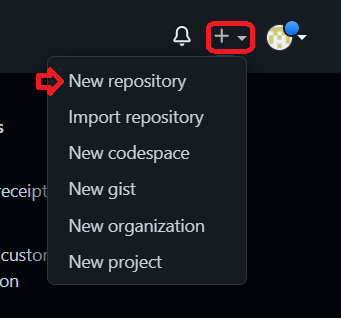
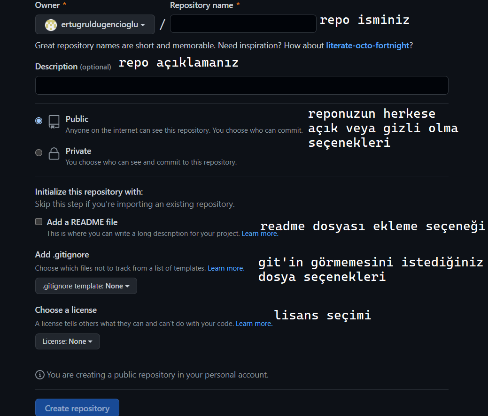
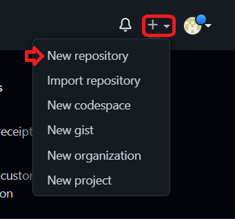
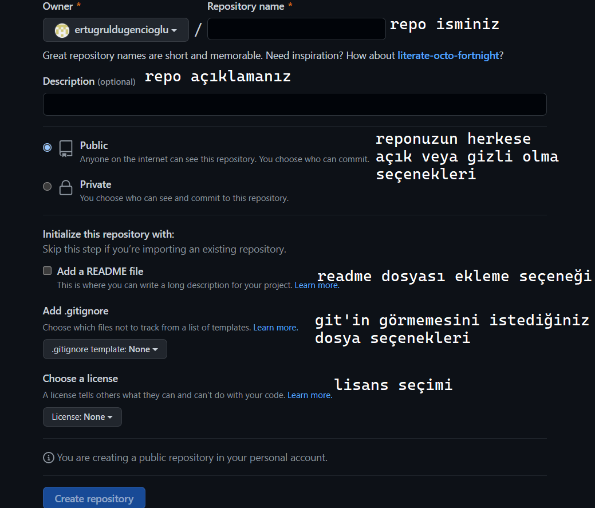

Remote Repo oluşturma
Remote repository oluşturmak için ekranın sağ üst kösesinden "New Repository" seçeneği seçilir
Repo oluşturma sayfasında istenilen özelliklerde repo oluşturulur
Remote repository oluşturmak için ekranın sağ üst kösesinden "New Repository" seçeneği seçilir
Repo oluşturma sayfasında istenilen özelliklerde repo oluşturulur
Git sürüm kontrol sistemini işletim sisteminize uygun olan versiyonunu indirin
Komut istemini açtıktan sonra kimliğinizi Git sistemine tanıtmak için ilk yapmanız gereken mail ve kullanıcı adınızı girmek
Git'i kullanmak istediğiniz dizine gittikten sonra aşağıdaki komut ile git'i proje klasörümüze dahil edelim. (Local repo oluşturma)
Yeni eklenen veya üzerinde değişiklik yapılan dosyaları staged ortamına göndermek için:
staged ortamına gönderilen dosyaların takibinin bırakılması için:
üzerinde çalışılan dosya klasörün içindeki bir değişime uğrayan, silinen veya eklenen dosyalar hakkında hakkında bilgi almak için:
Staged ortamındaki dosyaları local bir repository'e göndermek için:
Yapmış olduğunuz commit işlemlerini listelemek için:
Remote veya local repolara branch eklemek için:
Remote veya local repolarda branch silmek için:
Branchlar arasında geçiş yapmak için:
Commitler arasında geçiş yapmak için:
Başka branchtaki değişiklikleri içinde bulunduğunuz branch'a aktarmak için:
Remote repoları cihazımızda klasöre clonelamak için:
Cloneladığımız repo klasörünün içine repomuza koymak istediğimiz dosyalarımızı aktardıktan veya hali hazırda var olan dosyalardaki değişiklikleri commit ettikten sonra;
komut istemi üzerinden dosya dizinine giderek aldığımız commitleri push etmek için:
git'in görmesini istemediğimiz dosyaları belirtmemizi sağlar. Proje dizinine oluşturulur. Projede commit almadan önce gitignore dosyası yapılmalı commit edilen dosyalar .gitignore'a eklenmez.
istenmeyen dosya uzantıları için:
istenmeyen klasör için:
istenmeyen klasördeki seçili dosyaları ayırmak ve git tarafından izlenime sokmak için:
istenmeyen dosyalar için: